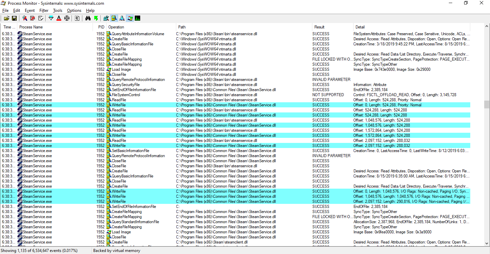

Xiaoyin LiuAugust 16, 2019
Recently a privilege escalation vulnerability in Steam PC client was disclosed on Internet. The original vulnerability write-up was written by Vasily Kravets, and it is available at [1]. It was fixed by Valve on Aug 13. Then I tried to find if the fix can be bypassed. Indeed there's a bypass. This vulnerability is assigned CVE-2019-15315.
The Steam Service is located at C:\Program Files (x86)\Common Files\Steam\SteamService.exe, and other Steam files are located at C:\Program Files (x86)\Steam. I noticed that when Steam service is starting, it copies C:\Program Files (x86)\Steam\bin\SteamService.dll to C:\Program Files (x86)\Common Files\Steam\SteamService.dll.

Normally any files under "Program Files" and "Program Files (x86)" are not writable by non-admin users. But Steam explicitly sets DACL to allow all users to have full access to C:\Program Files (x86)\Steam. So I place a malicious DLL at C:\Program Files (x86)\Steam\bin\SteamService.dll, and hope that Steam Service copies my DLL to replace the genuine one. This doesn't work because Steam Service checks file signature before the copy is made.
Since it checks signature, the next attempt is to replace it with an old copy of SteamService.dll. If it overwrites the current one, we can exploit the original symlink attacks again. The first part works: the old copy indeed overwrites the new one under Common Files\Steam. But if I try to exploit the symlink attack, it doesn't work.
It turns out that only replacing SteamService.dll is not enough. The fix is in SteamService.exe. This time I replace SteamService.exe and SteamService.dll under C:\Program Files (x86)\Steam\bin\ with old copies. Then start Steam Service. After it's started, it immediately exits with error 1051. But despite the error, the exploit actually works. The privilege of the symbolic key HKLM\Software\Wow6432Node\Valve\Steam\test is modified to grant full access to Users. The target I choose is HKLM\SYSTEM\CurrnetControlSet\Services\Steam Client Service. Now I can change the ImagePath, and start Steam Service again as used in the original exploit. So EoP is achieved once again!
Since Valve explicitly excludes "attacks that require the ability to drop files in arbitrary locations on the user's filesystem", I don't think they are interested in fixing this one. In my opinion, even allowing all users to have write access to C:\Program Files (x86)\Steam itself is a vulnerability, because any standard users can replace Steam.exe in this folder, and when admin users log in and launch Steam.exe, a malicious executable runs, and they won't notice it. I reported this to Valve in Feb 2017, and I got no reply except an acknowledgement of receipt.
Given that, I decided not to report this bypass to Valve, but rather disclose it.
This write-up is inspired by and based on the discovery by Vasily Kravets and Matt Nelson. Thank you for their discovery and write-up!
Thank you Kravets for requesting a CVE for this issue!